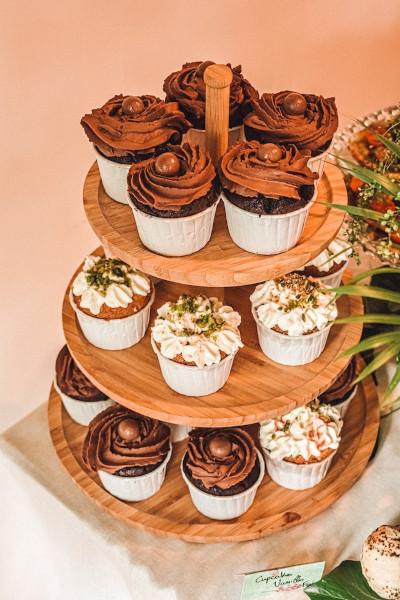

Since Sugar & Spice was founded in 2017, our mission has been to bring smiles to faces and create memorable experiences through our baked delights. Our talented team of bakers combine time-honored recipes with a dash of creativity, resulting in a menu that caters to every palate and occasion. From the comforting aroma of freshly baked bread in the morning to the sweet celebration of custom cakes for special events, our bakery embodies the spirit of warmth, hospitality, and culinary excellence.
Come visit our shop to browse our daily selection of freshly baked goods, or place an online order to pick up in store!
We also do catering for large events such as weddings, birthday parties, and corporate events. Visit our contact us page to request a quote.
Visit us often? Consider creating an account to earn sweet points and easily re-order your favorites!